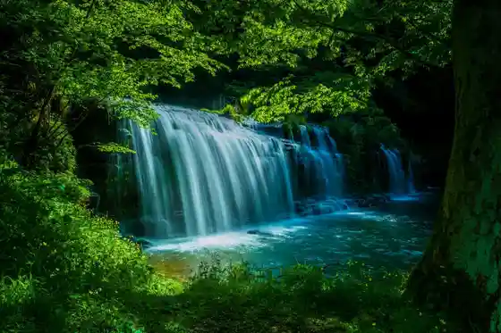
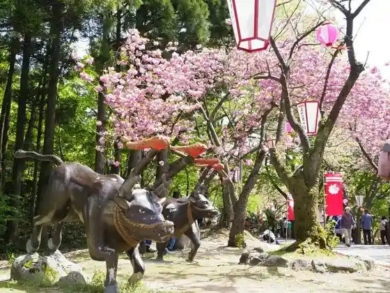
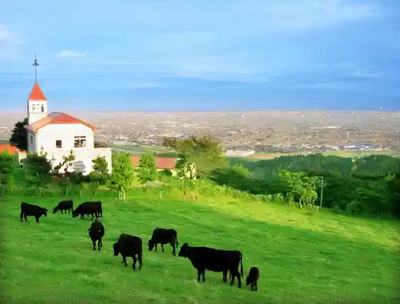
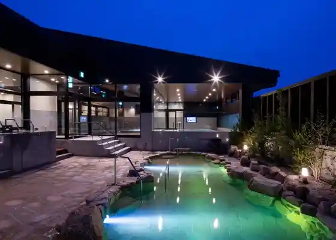

Miyajima Kyo
Oyabe, Toyama · 0766-30-2266 · Official / source link

Kurikara Ken Tei Park
Oyabe, Toyama · 0766-30-2266 · Official / source link

Inaba Yama Makino
Oyabe, Toyama · 0766-67-2607 · Official / source link

Tennen Onsen Kaze Forest
Oyabe, Toyama · 0766-92-2626 · Official / source link

Kurosu Land Oyabe
Oyabe, Toyama · 0766-68-0932 · Official / source link
Roadside Station Meruhen Oyabe
Oyabe, Toyama · 0766-68-3811 · Official / source link
Hakuhyo Honpo Goro Maruya
Oyabe, Toyama · 0766-67-0039 · Official / source link
Mitsui Autoretto Park Hokuriku Oyabe
Oyabe, Toyama · 0766-78-3100 · Official / source link
Hanyu Gokoku Hachiman Shrine
Oyabe, Toyama · 0766-67-1220 · Official / source link
Sushi Tokoro Sakata
Oyabe, Toyama · 0766-61-2788 · Official / source link
Edo Hisashi Shi Plus Oyabe Mise
Oyabe, Toyama · 0766-75-8191 · Official / source link
Osushiyasan
Oyabe, Toyama · 0766-68-0979 · Official / source link
Sakae Sushi
Oyabe, Toyama · 0766-67-4544 · Official / source link
Saikuringutaminaru
Oyabe, Toyama · 0766-61-3596 · Official / source link
Oyabe no Chiisa Na Bisutoro Marukassan
Oyabe, Toyama · 0766-67-0114 · Official / source link
Kyaramerutorikku
Oyabe, Toyama · Official / source link
Sakura Town JOMON Park
Oyabe, Toyama · 0766-67-5255 · Official / source link
Tsu Sawa Andonfureai Hall
Oyabe, Toyama · 0766-61-3531 · Official / source link
Ukawa Nosan
Oyabe, Toyama · 0766-30-8061 · Official / source link
Kitokito Farm
Oyabe, Toyama · 090-8965-7690 · Official / source link
Shiroyama Park (Oyabe)
Oyabe, Toyama · 0766-67-1062 · Official / source link
Atohausu Oyabe
Oyabe, Toyama · 0766-53-5344 · Official / source link
Kasho Wakabayashi Ya So Honke Main Shop
Oyabe, Toyama · 0766-67-0408 · Official / source link
Oyatama Shokudo 2024 Nen 3 Tsukibetsu Chi Nio Bentoya Santoshite Iten
Oyabe, Toyama · 0766-69-7123 · Official / source link
Hatake Jozo
Oyabe, Toyama · 0766-61-2111 · Official / source link
Asahi Shoyuaji So
Oyabe, Toyama · 0766-61-2014 · Official / source link
R.CAFE
Oyabe, Toyama · 0766-67-1185 · Official / source link
Oyabe Kurosu Land Hotel Kasui Ki
Oyabe, Toyama · 0766-67-1700 · Official / source link
Miyajima Onsen Takino So
Oyabe, Toyama · 0766-67-1122 · Official / source link
Kazumi Sai Bi Isurugi Kashiwa Ya
Oyabe, Toyama · 0766-24-1957 · Official / source link
Kurikara Genpei no Sato Hanyu Kuchi
Oyabe, Toyama · 0766-67-5645 · Official / source link
Famiriirojji Hatago Ya Oyabe Mise
Oyabe, Toyama · 0766-68-0855 · Official / source link
viva la vita
Oyabe, Toyama · Official / source link
Yatsu Sushi
Oyabe, Toyama · 0766-68-0654 · Official / source link
Kareshoppu JINJIN
Oyabe, Toyama · 0766-67-6972 · Official / source link
Meruhen Inaka
Oyabe, Toyama · 0766-68-3811 · Official / source link
Itarianresutoran Firentsue Club
Oyabe, Toyama · 0766-68-4082 · Official / source link
Ogawa Ya
Oyabe, Toyama · 0766-67-0554 · Official / source link
Erumu Sutei OYABE
Oyabe, Toyama · 080-8296-0117 · Official / source link
Pekotto !
Oyabe, Toyama · 0766-67-5150 · Official / source link
Oyabe Otani Museum
Oyabe, Toyama · 0766-68-2717 · Official / source link
Kissa Meruto
Oyabe, Toyama · Official / source link
Karubi Tei Ichiban Kan
Oyabe, Toyama · 0766-68-2989 · Official / source link
Kafe Basshuwabarii
Oyabe, Toyama · 050-3612-8285 · Official / source link
Uomasa Tei
Oyabe, Toyama · 0766-61-2056 · Official / source link
Ramburu
Oyabe, Toyama · 0766-61-3777 · Official / source link
Oyabe Yakusho
Oyabe, Toyama · 0766-67-1760 · Official / source link